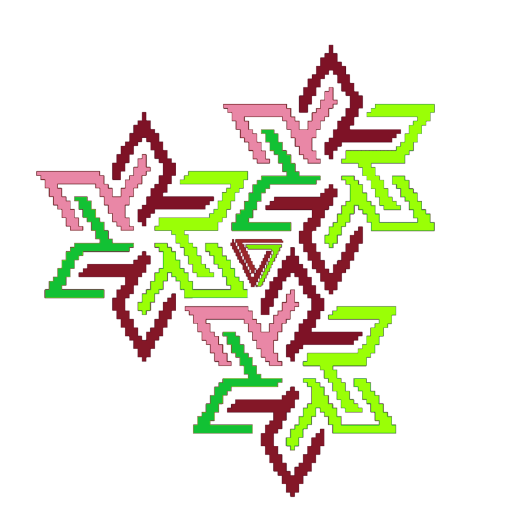

Endless farming simulator
Você achou uma fazenda no meio do nada. Mantenha-a viva num loop infinito: prepare a terra, plante, regue, colha e venda para somar pontos.
Pressione P para continuar.
Ganhe ★ pra desbloquear as próximas fases. Jogue sozinho ou com até 4 no mesmo teclado/controle (escolha no menu).
Joguem juntos na mesma fazenda. O host cria a sala e compartilha o código; os outros entram (celular funciona).
Compartilhe o código:
Jogadores: 1
Aguardando o host começar…
Reimplementação web (HTML5 Canvas) de Overgarden, submissão da Ludum Dare 46.